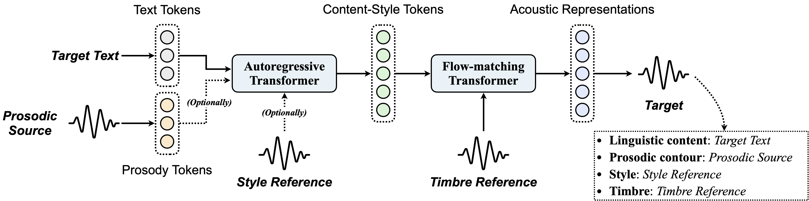

Controllable human voice generation, particularly for expressive domains like singing, remains a significant challenge. This paper introduces VersaVoice, a unified framework for controllable speech and singing voice generation. To tackle issues like the scarcity of annotated singing data and to enable flexible controllability, VersaVoice introduces two audio tokenizers: (1) a music-notation-free prosody tokenizer that captures prosody and melody from speech, singing, and even instrumental sounds, and (2) a low-frame-rate content-style tokenizer that encodes linguistic content, prosody, and style in human voice while achieving timbre disentanglement. VersaVoice consists of an auto-regressive (AR) content-style modeling stage, which aims to enable controllability over text, prosody, and style, as well as a flow-matching acoustic modeling stage that allows for timbre control. Particularly, during pre-training of the AR model, we propose both explicit and implicit prosody learning strategies to bridge speech and singing voice. Moreover, to further enhance the AR model’s ability to follow text and prosody, we design a multi-objective post-training task that integrates both intelligibility and prosody similarity alignment. Experimental results show that unified modeling in VersaVoice brings mutual benefits to both speech and singing voice generation. Additionally, VersaVoice’s effectiveness across a wide range of synthesis, conversion, and editing tasks for both speech and singing further demonstrates its strong generalization ability and versatility.

We will showcase the diverse capabilities of VersaVoice through the following examples.
| Task | Target Text | Prosodic Source | Style Reference | Timbre Reference | Results |
|---|---|---|---|---|---|
| Text to Speech | In just a heartbeat, I can traverse oceans, cross mountains, and explore cities that I've only dreamed of. | / | Child, High-pitched | ||
| I've been a silent spectator, watching species evolve, empires rise and fall. But always remember, I am mighty and enduring. Respect me and I'll nurture you; ignore me and you shall face the consequences. | Hindi-accented, Male | Mandarin, Female | Hindi-accented, Female | ||
| Text to Singing | Don’t forget me, I’m calling your name. I remember you said, love’s not always the same. | Adele | |||
| 我皱着眉头，感受着那份压力，但我知道我不能放弃，不能认输。于是，我深吸一口气，心底的声音告诉我 | Rap | Rap | |||
| Task | Target Text | Prosodic Source | Style Reference | Timbre Reference | Results |
|---|---|---|---|---|---|
| Humming to Singing | Moonlight dancing through the starry sky. Snowflakes falling in the winter night. | Whistle | Adele | ||
| 你是我的小呀小苹果，怎么爱，不嫌多 | Beethoven's Für Elise | ||||
| Instrument to Singing | It's always just me facing the sky, my mind roaming freely like the clouds. | To include the midi pic | Adele (To mix) | ||
| 朝霞染红天际，暖阳依旧，新希望 | Sun Yanzi | ||||
| Task | Raw Audio | Raw Text | Target Text | Results |
|---|---|---|---|---|
| Speech Editing | Who would've imagined that people could really turn into water... | Who would've imagined that people could truly turn into fire... | ||
| To mix | 没什么是一发利箭不能解决的。如果有，那就两发。 | 没什么是两发利箭可以解决的。如果有，那就五发。 | ||
| Singing Lyric Editing | Never mind, I'll find someone like you. I wish nothing but | Never mind, you'll find anyone like me. You wish nothing but | ||
| Alright, I'll turn over a new page. I wish for calm | ||||
| 对这个世界如果你有太多的抱怨，跌倒了就不该继续往前走，为什么，人要这么的脆弱堕 | 对你的人生如果你有太多的期盼，跌倒了就不该低头认输，为什么，人要这么的彷徨堕 | |||
| 对强化学习如果实验遇到了瓶颈，损失值就不该太大动荡，看梯度啊，网络何时被优化好 |
| Task | Source Audio | Style Reference | Timbre Reference | Results |
|---|---|---|---|---|
| Voice Conversion | Who would've imagined that people could really turn into water... | / | Hindi-accented | |
| Hindi-accented | ||||
| Singing Voice Conversion | What about sunrise? What about rain? What about all the things that you said we were to gain? | / | Adele | |
| Adele | ||||
| Task | Source Audio | Style Reference | Results |
|---|---|---|---|
| Accent Conversion | I'm a versatile zero-shot voice cloner. I can mimic a wide range of vocal styles from either text or waveform as input. | Hindi-accented | |
| Emotion Conversion | |||
| Whisper-to-Normal Conversion | Given the circumstances, isn't this a little unorthodox? | ||
| Singing Style Conversion | Girl why can't you wait, Girl why can't you wait till I fall out of love, won't | ||
| 等待，我随时随地在等待 | |||